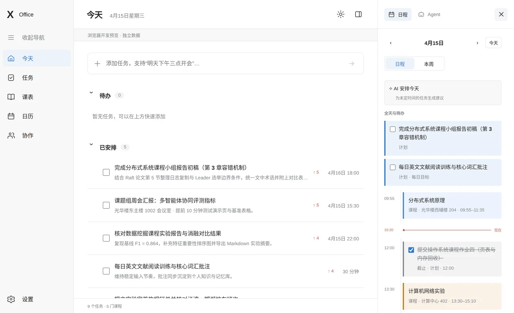
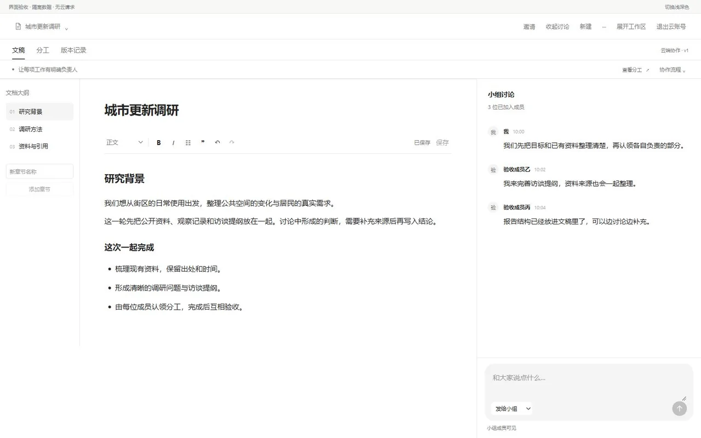

01 / VERIFIED EXECUTION
工具回执落库
让 AI 从“提建议”走向“拿回执的真实执行”
通过本地与云端受限工具接口接入 OpenClaw 等个人智能体；模型按授权作用域创建任务、拆解嵌套步骤、读写课表与知识，必须在收到数据库真实回执后才回报完成，绝不伪造成功状态。
XMISSION OFFICE · v0.7.12 · PERSONAL AGENT & COLLABORATION SUITE
面向校园学习与小组协作的个人智能体桌面工作台。告别割裂的清单与群聊，以极简浅深色界面与硬隔离数据边界，将今日排程、教学周课表、共同文稿分工及受限 Agent 数据库回执收拢于同一工作流。
Real Office 0.7.12 Interface

Core Philosophy
Office 版移除原版游戏化商店、抽奖与四套美术皮肤，保留最克制的浅深色排版与可拖动上下文抽屉，把算力与交互都留给真实执行。
通过本地与云端受限工具接口接入 OpenClaw 等个人智能体；模型按授权作用域创建任务、拆解嵌套步骤、读写课表与知识，必须在收到数据库真实回执后才回报完成，绝不伪造成功状态。
支持 Excel/CSV 导入、AI 课表截图先入校对表再保存、单双周与单周调课覆盖及空时段压缩；AI 日计划排程会主动避开固定课程与既有会议活动，一键唤出置顶 office-widget 悬浮任务窗。
小组协作页只呈现主动发给小组的共同文稿、讨论与分工；个人私人脑暴、个人知识与记忆默认完全隔离，绝不会因打开协作工作区或邀请好友而越界公开。
以独立产品标识 com.xmission.office.dev、独立系统钥匙串、独立端口 43867/43868 及 office-product.json 校验运行；配套软删除回收站与带安全快照的独立备份恢复。
Coursework Collaboration Loop
从「开始协作」立项，到「共同文稿」自动保存与冲突保草稿，再到「分工」四态流转与他人验收，全流程无需在微信群里翻找文档版本。

共同文稿 · 左侧章节大纲、中间富文本自动保存与冲突保护、右侧隐私分离的小组讨论
Knowledge & Agent Ecosystem
每一项资料都有清晰权限边界与核验来源，让日常查询、跨端同步与有界代理都在可控范围内发生。
与公共资料及共享空间分库分权管理，支持文本型知识与记忆沉淀，供已授权 Agent 在个人边界内检索复用。
收录 16 篇官方公开摘要、20 组校车方向与 226 个发车时刻，均附来源与复核期限（不接入统一认证与选课系统）。
预留 OpenClaw / Coze / Hermes 执行接口；租户与桥接就绪时支持微信扫码绑定，未就绪明确提示、绝不伪造连接。
已在 collaboration-local 完成本机约束原型：仅在议题、期限与工作量上限内代理发言，可撤销且不增投票权。
完整自建云服务包含 30 项数据库结构迁移，生产环境强制 OIDC JWT/JWKS 认证并代码级禁用开发免登，所有同步请求均实施设备与产品隔离校验。
无网络时完整离线可用；联网后经幂等操作队列与 /changes 增量流同步。遇到并发版本冲突自动保留本地草稿交由用户决断，不静默覆盖他人改动。
前后端双重富文本净化（DOMPurify + ammonia），凭据落入系统钥匙串且 Agent Grant 哈希存储；导入备份前强制生成安全快照并暂停 Agent 接管。